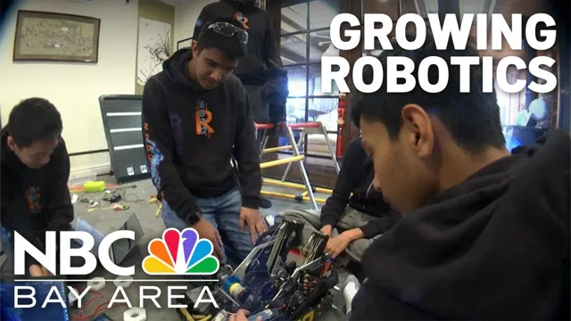

Pranav Yerramaneni
Firmware and robotics engineer. I write real-time control for humanoid robots, ship machine learning onto small hardware, and teach elementary-school kids to build robots.
Studying computer science at UC Santa Cruz, class of 2029. Based in Santa Clara, California.
Open to firmware, robotics and applied-ML internships for summer 2027.
- θ
- +0.0°
- ω
- +0 rpm
- τ
- +0 %
A reaction-wheel pendulum under a 240 Hz feedback loop. Drag it, or press Nudge, and watch it recover.
Work
-
Firmware engineer intern, Nova Robotics
Santa Clara · February 2025 to March 2026
Real-time PID and LQR control for a dual-reaction-wheel humanoid on ROS 2, and a cyclic-coordinate-descent inverse-kinematics solver so it could walk and squat on its own. Underneath that, the wiring: IMUs, motor drivers and cameras on a Raspberry Pi over I²C, SPI and CAN. Controllers were proven in Isaac Sim and MuJoCo before they ran on the robot, and a Unity and OpenXR link over WebRTC let a headset drive the two-axis head at under 100 ms end to end.
The humanoid balancing on one leg and switching legs, its two reaction wheels doing the work. ROS 2 · C++ · Python · Isaac Sim · MuJoCo · Unity · WebRTC · CAN
-
Co-founder and software lead, CometKits
Santa Clara · since 2022 · cometkits.github.io ↗
Robotics kits that elementary schools can afford: a custom board around an Arduino Nano, a 3D-printed chassis and a curriculum written to the Next Generation Science Standards. I built the software, including a block-based editor in the browser that turns blocks into C++, compiles it and loads it onto the car, so a fourth-grader's first program runs on real hardware. The kits have reached hundreds of students across five Santa Clara elementary schools.

NBC Bay Area on CometKits: a South Bay high-school robotics team bringing the sport to the next generation. Arduino · C++ · Blockly · JavaScript
-
Full-stack developer, Tourable
2024
Tourable is a Cornell-founded startup that sells live video campus tours. I worked across the product's stack and ran a data migration of more than a million records.
Projects
-
VibeVoice × Rokx ↗
2025 · PyTorch · LLaVA · ONNX · Docker · Jetson Nano
A voice and vision stack for Rokx. Microsoft's open-source VibeVoice text-to-speech, tuned for emotional range; a quantized LLaVA vision-language model fine-tuned with input from a Stanford childcare professor; all of it running on a Jetson Nano at more than 15 frames per second. Dockerizing the stack took setup from hours to minutes, on a box in the lab or on EC2.
-
Tennis motion capture on an ESP32 ↗
2024 · TensorFlow · CNN and LSTM · ESP32
A racket-mounted wearable that logs IMU kinematics to an SD card for training and streams over Wi-Fi for live feedback. A CNN and LSTM classifier trained on 20+ players identifies strokes at about 90% accuracy, with inference on the phone.
-
FTC Team 8872, Robopocalypse ↗
2022 to 2025 · Java · FTC SDK · Road Runner · OpenCV
Co-captain and software lead of Wilcox High's FIRST Tech Challenge team. I ran the five-person software crew: Road Runner motion planning, OpenCV vision and the autonomous routines for a robot that reached the 2024 FIRST Championship in Houston and ranked 36th of 7,681 teams worldwide. Two tools came out of it: Voyager, a modular pathfinding library with its own documentation site, and AxonProgrammer, so teams on macOS and Linux can configure the servos that only had a Windows tool.
The 2024-25 season robot running on the practice field. -
typethru ↗
2026 · Python · pip install typethru
Apply a git diff by retyping it. typethru reverts what a coding agent wrote and feeds it back hunk by hunk, verifying every keystroke, until the working tree is byte-identical to the agent's version. Lockfiles, whitespace and deletions apply themselves, and a plan screen prices each file in minutes at your own typing speed. Why I built it.
Contact
I reply to every message, usually within a day.
- Emailpranav@devmello.xyz
- GitHubgithub.com/DevMello ↗
- LinkedInlinkedin.com/in/pranav-yerr ↗
- Discorddevmello